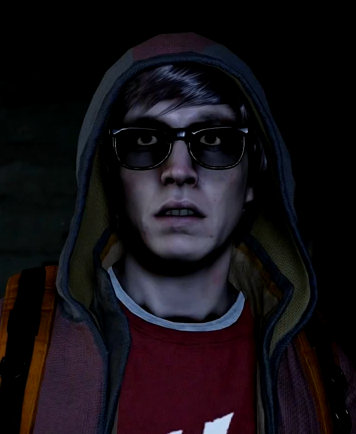
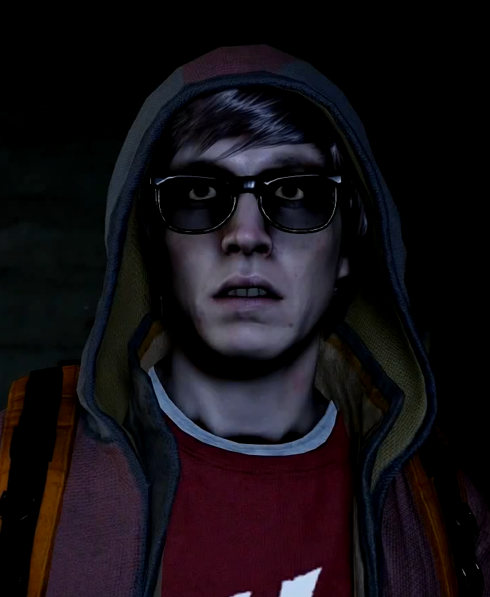

I, Eugene Sims, am a Conduit. I am the son of Cherrie Sims, a congresswoman for Delaware. I was bullied as school for being the quiet nerd. No one to turn to, I turned to my favorite video game Heaven’s Hellfire. In there I could protect the weak and demons punish the bullies. A year after the RFI blast, my powers awaken while being attacked by a bully. A demon attacked the people around me. The D.U.P found me and locked me up at Curdun Cay for 6 long years. Augustine took advantage of me and used my powers to get other conduits to fight and stopped me from protecting myself. When being transported with Abigail and Hank, Hank got the truck to crash allowed Abigail and I to escape to seattle. I made my base in the Lantern District allowing myself to mess with D.U.P. Delson helped me take down a small operation that D.U.P set up. He helped me come out of my shell and take ahold of my power. Thanks to him I am a better person. D.U.P did nothing for me! They just made me into a weapon!
HELP STOP D.U.P!